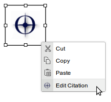

Click on the SOLO Citation icon.

A dialog will appear with several fields for you to search SOLO by: title, author, and ISBN. You can also specify how many results you would like to be shown.
Search as you wish, then click 'Search' (or hit ENTER).
The results will be shown below the search form.
Click the desired item and it will be embedded at the cursor positon.

To change a reference, right click on the placeholder and click 'Edit Citation' and perform the desired search.

To show a list of citations in a block, create a div in your page with the class 'citationsContainer' (to be finished...)